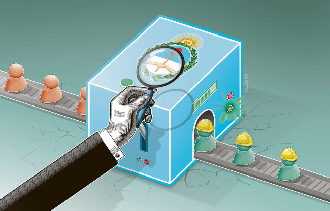
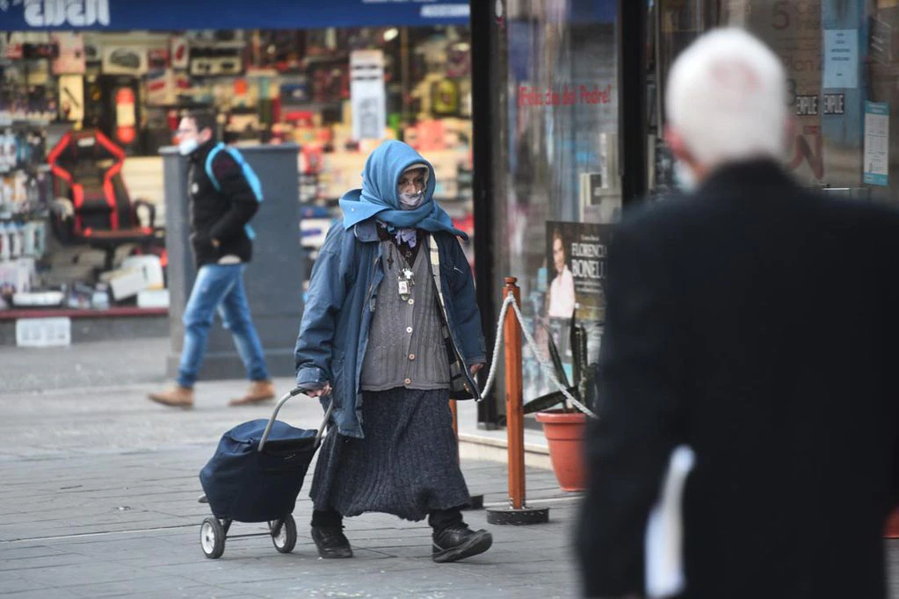
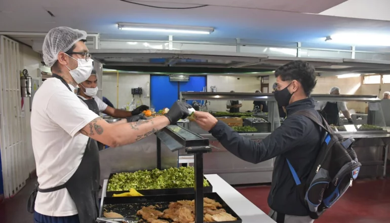

Paritarias por debajo de la inflación, suspensiones, despidos y otras yerbas más info ...
¿Se vino el Ofri?

La gente cagandose de frío.
Este jueves se presenta en el Área Metropolitana de Buenos Aires con una temperatura de 12.9 grados y una máxima prevista de 18 grados, cielo algo nublado por la mañana a parcialmente nublado por la tarde, con vientos que oscilarán entre los 7 y los 22 kilómetros por hora.

El comedor de la UNLP abre sus puertas a la noche.
En diálogo con CNN Radio, Daniel Artana habló de la inflación, que sería superior al 8% en alimentos en abril según registros privados a los que accedió La Posverdad.
El proyecto que impulsa Claudio Morresi, ex jugador del CARP y actual legislador porteño por el Frente de Todos, tiene un fundamento claro: solicita al Poder Ejecutivo que realice las gestiones necesarias ante la AFA para que River incorpore a sus vitrinas la Copa de Oro "Eva Perón, benefactora del Fútbol", que fue oficializada en una sesión extraordinaria del Consejo Ejecutivo que se realizó en la calle Viamonte el 14 de agosto de 1952.